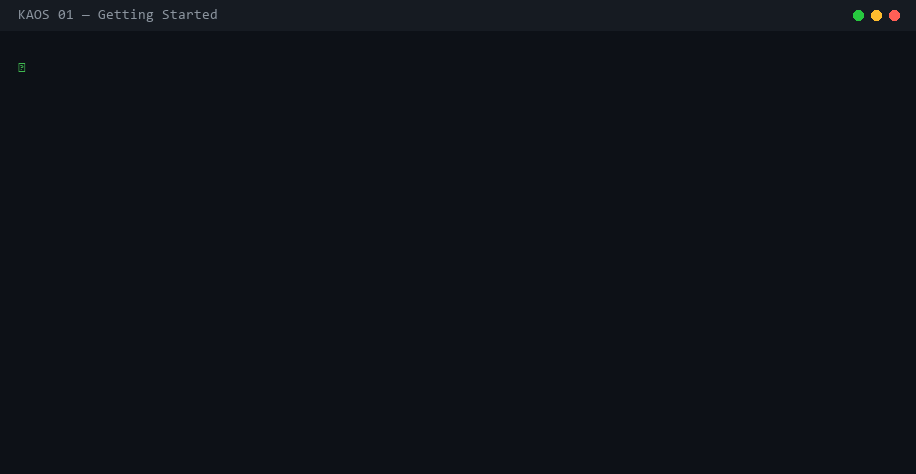
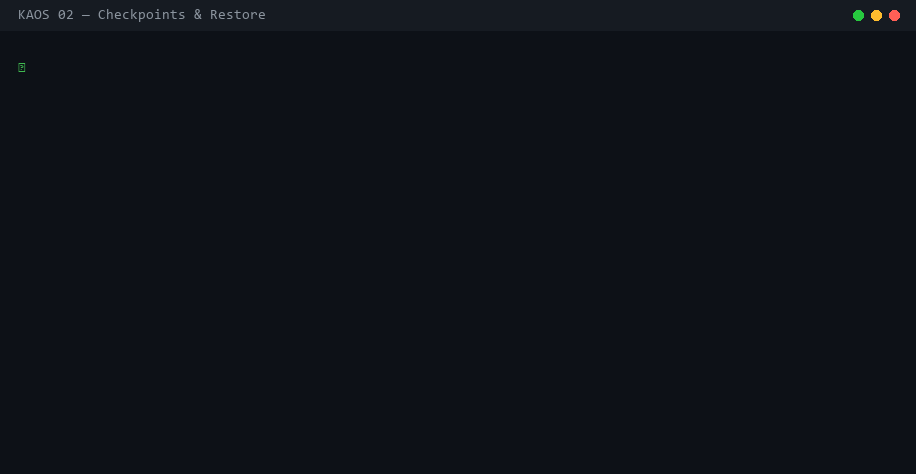
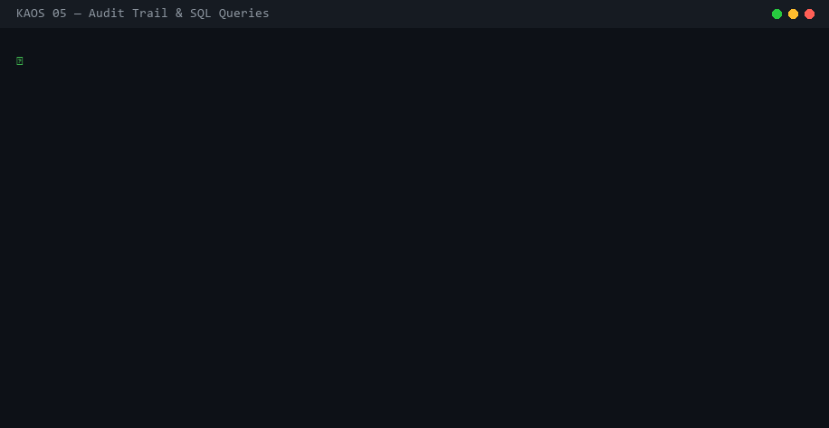
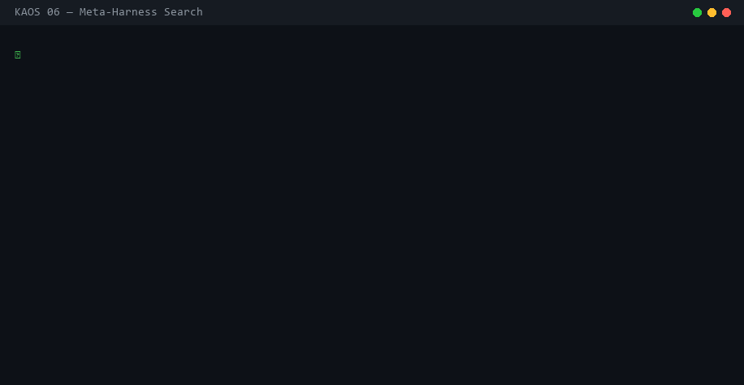
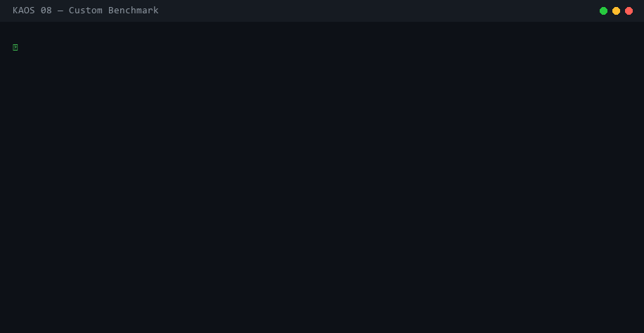
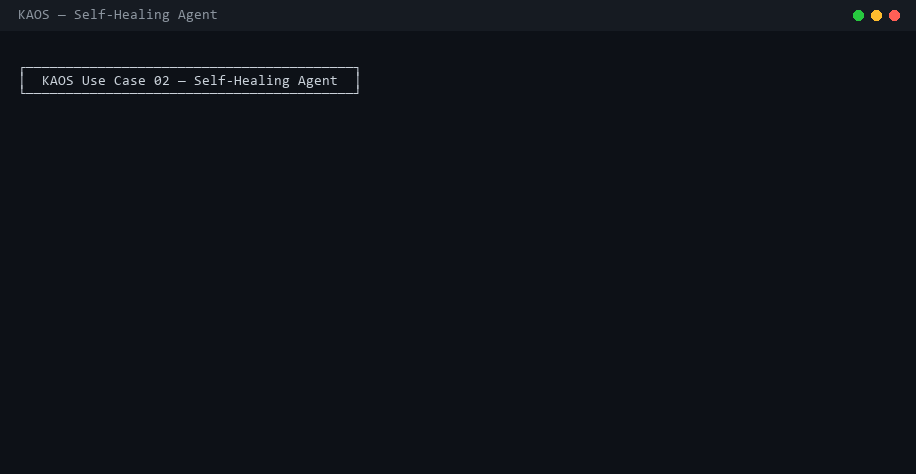
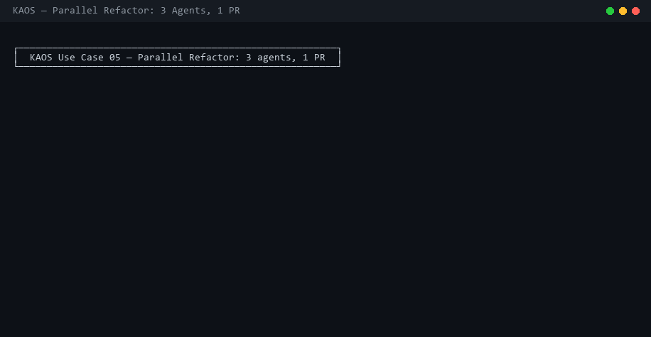
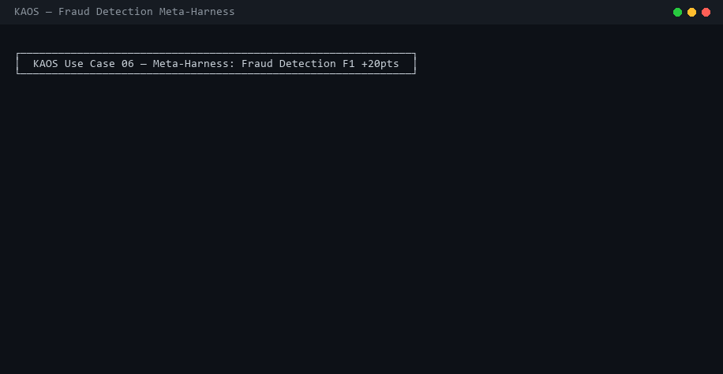
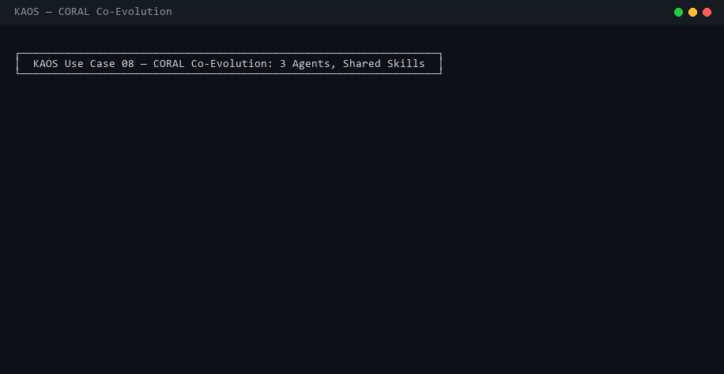

See KAOS in Action
Real terminal recordings. Real CLI. Real results — no voiceover, no slides.
Code Review Classifier: 48% → 83% — Nothing Skipped
A complete walkthrough of every step: define the benchmark, run kaos mh search, watch 15 iterations of the proposer reading traces and proposing new harnesses, see the CORAL plateau pivot fire and break a 4-iteration stall at 74%, hit 83% with the two-step decomposition, view the Pareto frontier, inspect the knowledge base, and export the winning harness code.

Getting Started in 2 Minutes
Install KAOS, initialize the database, spawn your first agent, write files to its isolated VFS, and query the full audit trail with SQL — all from the terminal.

Checkpoint, Diff & Surgical Restore
Snapshot an agent before a risky operation, make changes, compare the diff, and roll back exactly that one agent — without touching any other.

Parallel Agents & the GEPA Router
Spawn multiple agents simultaneously. GEPA classifies each task by complexity and routes to the right model tier — local fast, local strong, or cloud — automatically.

MCP Server — 18 Tools for Claude Code
Connect KAOS as an MCP server. Claude Code gains direct access to agent spawning, VFS reads/writes, checkpoints, and meta-harness search — all without leaving the IDE.

Full Audit Trail & SQL Queries
Every tool call, file write, and state change is journaled. Query across all agents with plain SQL — find failures, measure token costs, trace exactly what each agent did.

Meta-Harness: Automated Search Loop
Seed with your baseline, let the proposer read full execution traces, generate better harnesses, evaluate them, update the Pareto frontier. Knowledge compounds across runs.

CORAL Co-Evolution
Multiple specialized agents evolve solutions in parallel. A hub agent periodically syncs the best discoveries — architectures, optimizers, regularization — back to the whole team. Inspired by CORAL (arXiv:2604.01658) — Towards Autonomous Multi-Agent Evolution for Open-Ended Discovery.
Custom Benchmarks
Define your own task harness in Python, plug it into the meta-harness search loop, and let KAOS optimize the prompt strategy automatically against your real data.

Code Review Swarm
4 agents review the same codebase from different angles — security vulnerabilities, performance, code style, and test coverage — all in parallel, fully isolated, results queryable by SQL.

Self-Healing Agent
Checkpoint before a risky database migration, simulate a failure mid-operation, watch the agent automatically restore to the clean state — while other agents keep running unaffected.

Post-Mortem Debugging
An agent broke production. Walk through the complete audit trail: stream logs, run SQL queries against the event journal, search across all agents, and diff checkpoints to pinpoint exactly what changed.

Meta-Harness: Classifier 45% → 87%
Start with a broken text classifier at 45% accuracy. Meta-Harness runs 10 automated iterations — reading traces, proposing strategies, evaluating candidates — and finds an approach hitting 87%.
Parallel Refactor: Tests + Impl + Docs
3 agents tackle the same module simultaneously — one writes tests, one refactors the implementation, one updates documentation. All isolated, all checkpointed, merged when done.

Fraud Detection: F1 0.58 → 0.81
Fraud classifier stuck at 65% recall with 30% false positives. CORAL pivot prompts kick in at stagnation, co-evolution shares discoveries across agents, and F1 improves from 0.58 to 0.81.

Autonomous Research Lab
4 ML hypothesis agents run in parallel overnight — architecture search, optimizer tuning, scaling laws, regularization. Each isolated in its own VFS, results queryable with SQL when they finish. Inspired by Karpathy's autoresearch.

CORAL Co-Evolution End-to-End
3 specialized agents co-evolve solutions: reflect every iteration, pivot on plateau, consolidate shared skills every N steps. The hub syncs discoveries back to the team in real time. Based on CORAL (arXiv:2604.01658).
